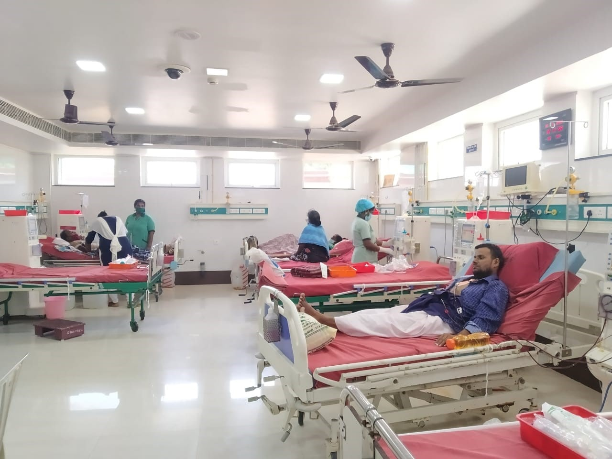
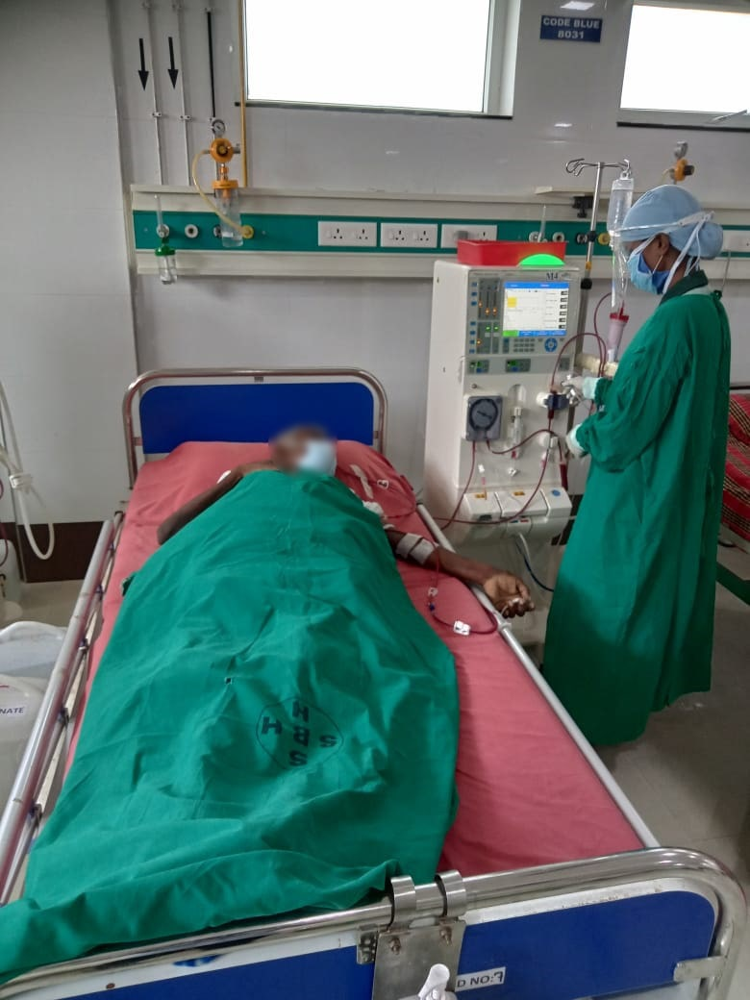
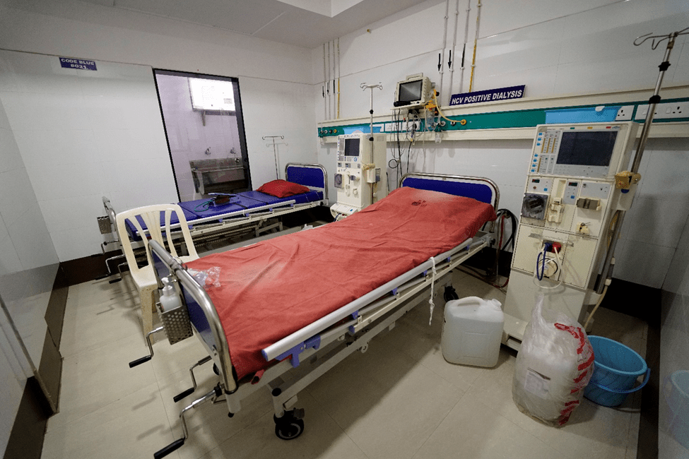
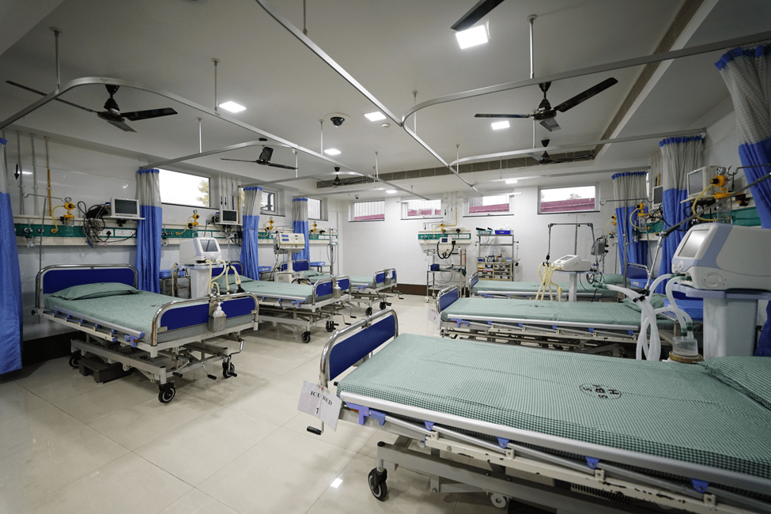

24 Hour HEMODIALYSIS
Patients with sudden onset Acute kidney injury who require immediate attention by an experienced Nephrologist and urgent Dialysis will be attended to at SB Hospital as soon as the absolutely necessary investigations are completed.
SB Hospital was the first private hospital to start Haemodialysis in Thanjavur district. Hence long standing experience of more than thirty years of service in this field has given us a perfect dialysis unit. Haemodialysis bay has ten haemodialysis Machines for routine dialysis & two separate haemodialysis machines in a separate room for patients with infectious Viral Diseases. Viral profile investigations are done periodically for patients who are on regular LONG TERM DIALYSIS programme. For new patients who have first time dialysis in our hospital all precautionary tests including viral marker tests are mandatory. Hence patience are very safe for Haemodialysis Procedure at SB Hospital.
HAEMODIALYSIS AT ICU
Dialysis Room

SB Hospital has a 10 PLUS TWO bedded State of Art ICU with necessary monitoring equipment and under the supervision of Internivists and highly qualified staff. SB Hospital is the only hospital where haemodialysis can be done in the ICU itself without the need for shifting the patient.
The entire Dialysis programme is under the over all supervision of senior Nephrologist, DR. SENTHIL NAYAGAM,MD.,DM
he has had his nephrology training at PGMER, Chandigarh, one of the top most nephrology institutions in the world.
Hemodialysis

HCV positive Dialysis Room

SEPARATE POST TRANSPLANT ICU

High dependency Post Transplant ICU with all monitoring facilities for Dialysis in the ICU itself is also available.